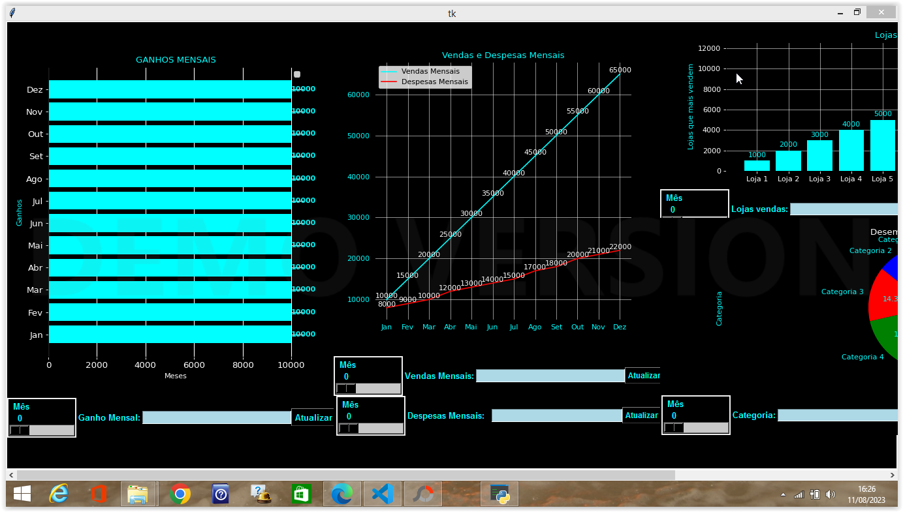

Excel
Word

Powerpoint

Matplotlib para relatórios visuais
Conhecimento em Softwares de Escritório: Domínio do Microsoft Office (Word, Excel, PowerPoint,Python) documentos, planilhas, apresentações e gerenciar e-mails. Organização e Gerenciamento de Tarefas: Habilidade de manter agendas, agendar reuniões, coordenar eventos e gerenciar eficientemente tarefas e prazos. Comunicação Eficaz: Capacidade de se comunicar de forma clara e profissional, tanto por escrito quanto verbalmente, com colegas, superiores e clientes. Atendimento ao Cliente: Experiência em lidar com clientes ou parceiros de negócios, oferecendo um serviço de atendimento de alta qualidade. Gerenciamento de Arquivos e Documentos: Resolução de Problemas: Capacidade de identificar problemas, analisar situações e propor soluções eficazes. Trabalho em Equipe: Aptidão para colaborar com colegas de trabalho em projetos e tarefas e manter um ambiente de trabalho harmonioso. Gerenciamento de Tempo: Habilidade de priorizar tarefas e usar o tempo de forma eficaz para cumprir prazos. Confidencialidade: Compromisso com a confidencialidade e ética ao lidar com informações sensíveis. Flexibilidade e Adaptabilidade: Capacidade de se adaptar a mudanças nas prioridades e na carga de trabalho, mantendo um alto nível de desempenho. Habilidades Técnicas: Conhecimento em sistemas de gerenciamento de documentos, softwares. Idiomas: Inglês e Espanhol intermediário . Sei ler em Inglês e Espanhol , entendo 80% dos dois idiomas em audio,mas ainda faltam palavras para se aprender, e sou "apto e capaz" a sobreviver a temporadas fora do país .